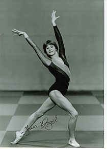

Jana Vogel (GDR)
1985 World Championships Team Bronze Medalist

Medal Total
World Championships: 1 Bronze
Jana was born on June 18, 1968 and trained at SC Leipzig.
Competition Results
1983
Jr. GDR-CSSR Dual Meet: 1st Team, 3rd AA, 1st V, 3rd FX
Jr. GDR-USSR Dual Meet: 1st Team, 4th AA, 3rd B
1984
Catania Cup: 3rd AA
GDR Championships: 6th UB, 7th B, 7th FX, 8th V
Hungarian International: 7th AA, 6th UB, 6th FX
Moncada Cup: 2nd AA
1985
GDR Championships: 5th AA, 1st UB, 4th V, 5th B, 5th FX
GDR-HUN Dual Meet: 1st Team, 3rd AA
Hungarian International: 11th AA
International Champs. of Romania: 6th AA
World Championships: 3rd Team, 23rd AA (prelims)
1986
Ahoy Cup: 5th AA, 2nd UB
Chunichi Cup: 5th AA, 2nd UB
GDR Championships: 2nd AA, 1st UB, 1st B, 6th V, 3rd FX
Goodwill Games: 12th AA, 7th B
HUN-CSSR-GDR "B" Meet: 2nd AA
Hungarian International: 4th AA
Moscow News: 6th AA
This page was created on September
09, 2006 and was last updated on November 13, 2011.
© Gymn Forum